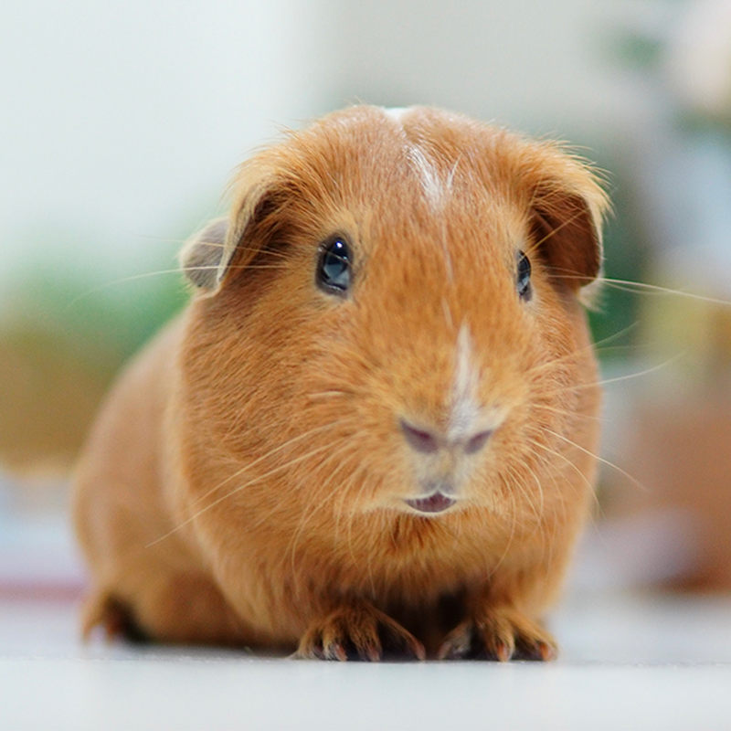

Adopting a Companion
We don't believe in rushed adoptions. We take the time to learn their unique personalities and we will walk you through a relaxed, step-by-step match process to make sure your household and your new pet are a perfect fit for life.

Opening Your Home to Foster
Fostering is the absolute heartbeat of our rescue. Because we do not own a giant commercial brick-and-mortar shelter building, we can only save an animal if a local neighbor has an extra room or an open spot on their couch. We provide all the food, crates, and medical supplies—you just provide the safety and love.
Ways to Volunteer
You don't need a background in veterinary medicine to make a huge difference here. Our little rescue relies on neighbors to help transport animals to vet appointments, write stories for our website, handle administrative paperwork, or help out at weekend community adoption events.